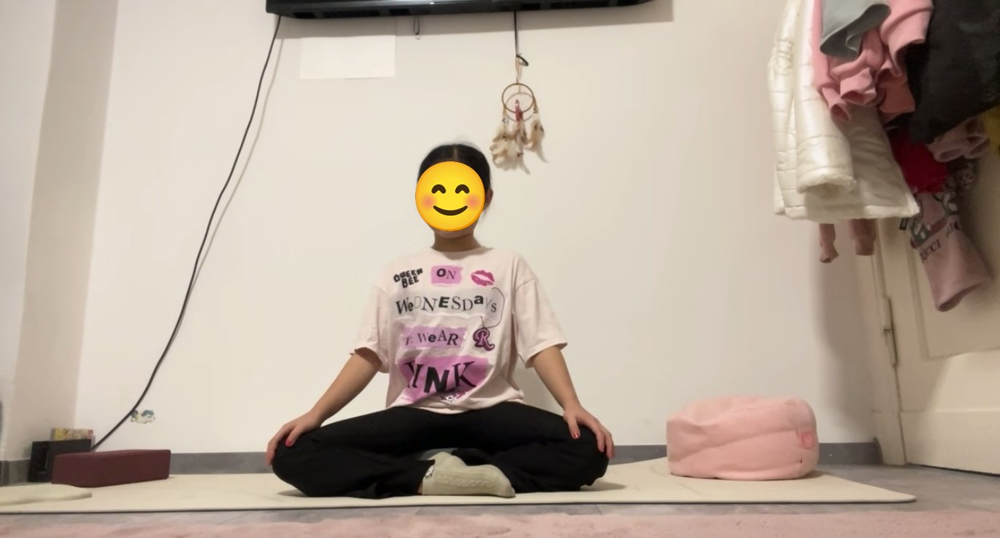

Yoga người lớn · Hơi thở và điều khí
Điều khí trong yoga cân bằng phục hồi: hít vào nghĩ về đâu, thở ra nghĩ về đâu, và vì sao
“Hít vào, nghĩ về lồng ngực. Thở ra, đưa ý nghĩ xuống bụng.” Câu này cô nói trong lớp nhiều đến mức học viên thuộc lòng. Một tối, giữa lúc cả lớp đang ngồi thở, có chị giơ tay hỏi rất thật: “Cô ơi, sao lại phải nghĩ như thế ạ? Em nghĩ về bụng thì có gì khác đâu?”
Câu hỏi hay. Cô không trả lời ngay được trong một câu, vì nó có nhiều tầng.
Có tầng của cơ thể: cơ hoành, nhịp tim, dây thần kinh phế vị. Có tầng của tâm lý: sự chú ý đặt ở đâu thì đầu óc nghỉ ở đó. Và có tầng của yoga cổ, nơi người xưa gọi đó là dẫn khí, là prana và apana, là những dòng chảy mà mắt không nhìn thấy.
Bài này cô viết để trả lời chị ấy cho đầy đủ. Phần nào khoa học đã đo được, cô ghi nguồn. Phần nào là cách nhìn truyền thống, cô nói rõ là truyền thống. Hai phần không cãi nhau. Chúng chỉ là hai cách kể về cùng một trải nghiệm.
Câu chuyện được kể lại từ lớp học, đã đổi chi tiết để giữ riêng tư.

- Điều khí là gì
- Vì sao hít vào nghĩ về ngực
- Vì sao thở ra đưa ý đi xa
- Năm đường dẫn ý
- Chọn đường theo trạng thái
- Tập cùng hình động
- Bài tập 12 phút
- Khoa học nói gì
- Cách nhìn truyền thống
- Điều khí và lối sống
- Lưu ý, chống chỉ định
- Khi nào đi khám
Điều khí là gì
“Điều” là điều hòa, cũng là dẫn dắt. “Khí”, trong cách nói thường ngày, vừa là hơi thở đi vào đi ra, vừa là sinh lực mà mình cảm thấy khi khỏe, khi mệt. Điều khí là cùng lúc làm hai việc: thở chậm và đều, và đặt sự chú ý vào một vùng của cơ thể theo nhịp thở.
Người tập khí công Trung Hoa có câu “ý dẫn khí đi”, ý đến đâu khí đến đó. Trong Yoga Sutra của Patanjali, câu 2.50 tả phép thở được điều chỉnh theo ba thứ: nơi chốn (desha), thời gian (kala) và số đếm (sankhya). “Nơi chốn” ở đây, nhiều thầy giảng là chỗ hơi thở chạm tới, và chỗ mình đặt tâm vào.
Sophia hay ví thế này. Hơi thở là con thuyền. Sự chú ý là người cầm lái. Thở mà không để ý gì thì thuyền vẫn trôi, vẫn sống được. Thở mà có người cầm lái, thuyền đi về phía mình muốn: xuống cho yên, lên cho tỉnh, ra cho ấm.
Thở chậm, thở ra dài, thở bằng cơ hoành, và luyện chú ý vào cảm giác cơ thể. Những thứ này đã được đo bằng nhịp tim, huyết áp, sóng não, bảng hỏi tâm lý.
Prana, nadi, năm luồng khí, khí đi xuống đan điền, xả khí qua lòng bàn chân. Đây là bản đồ của người xưa để luyện tâm, chưa được chứng minh bằng thực nghiệm như một cấu trúc có thật.
Vì sao hít vào thường nghĩ về lồng ngực
Khi hít vào, cơ hoành hạ xuống, lồng ngực nở ra, phổi đầy lên. Đó là lúc cảm giác ở ngực rõ nhất. Đặt chú ý vào chỗ cảm giác rõ nhất là cách dễ nhất để tâm có chỗ bám. Người mới tập thiền hay được dặn đúng như vậy: chọn một chỗ hơi thở chạm vào rõ ràng, rồi ở lại đó.
Có một điều nhỏ mà ít người biết. Trong lúc hít vào, tim mình đập nhanh lên một chút. Thở ra, tim chậm lại. Hiện tượng này có tên là loạn nhịp xoang hô hấp, nghe đáng sợ nhưng hoàn toàn bình thường, thậm chí là dấu hiệu của một hệ thần kinh khỏe. Dây thần kinh phế vị nhả “phanh” khi hít vào, và đạp “phanh” khi thở ra.
Vậy hít vào là pha nhận vào, mở ra, hơi tỉnh lên. Để ý ở lồng ngực, chỗ trái tim và hai lá phổi, là để ý đúng chỗ đang diễn ra việc ấy. Theo cách nhìn yoga, lồng ngực cũng là chỗ ở của prana, luồng khí đi vào, nuôi dưỡng.
Một lưu ý cho đúng: “nghĩ về ngực” không có nghĩa là thở ngực, so vai lên. Bụng và sườn vẫn nở tự nhiên. Mình chỉ đặt ánh mắt bên trong vào ngực mà thôi.
Vì sao thở ra lại đưa ý nghĩ đi chỗ khác
Thở ra là pha buông. Nhịp tim chậm lại. Cơ thở nghỉ. Nhiều nghiên cứu thấy rằng thở chậm, nhất là thở ra dài hơn hít vào, đi cùng hoạt động phó giao cảm tăng lên, phần hệ thần kinh lo việc nghỉ ngơi và hồi phục. Một thử nghiệm ở Đại học Stanford năm 2023 so sánh năm phút mỗi ngày thở ra kéo dài với năm phút thiền chánh niệm: nhóm thở ra kéo dài cải thiện tâm trạng nhiều hơn, và nhịp thở lúc nghỉ chậm hơn sau một tháng.
Bây giờ ghép thêm sự chú ý. Khi thở ra, nếu mình để ý nằm yên ở đầu, nơi những suy nghĩ đang chạy, thì thở ra xong suy nghĩ vẫn chạy tiếp. Nếu mình cho ý đi theo hơi thở ra, xuống bụng, xuống bàn chân, thì có ba việc xảy ra cùng lúc.
Tâm có việc để làm
Đi theo một đường trong cơ thể là một nhiệm vụ chú ý nhỏ, đủ để kéo mình khỏi vòng suy nghĩ lặp đi lặp lại.
Buông đi đôi với một chỗ
Mỗi lần thở ra, vùng mình nghĩ tới được “mời” thả lỏng. Giống cách thư giãn từng phần cơ thể mà các nhà tâm lý dùng gần trăm năm nay.
Cảm nhận cơ thể rõ hơn
Lặp lại nhiều lần, mình nhận ra cảm giác bên trong tinh hơn: chỗ nào căng, chỗ nào ấm, chỗ nào lạnh. Khoa học gọi là nội cảm (interoception).
Còn đi về đâu thì tùy mình cần gì. Đây là chỗ mà cách nhìn truyền thống rất hữu ích. Yoga cổ chia khí trong người thành năm luồng. Thở ra mà để ý đi xuống là theo luồng apana, đi xuống, thải ra, tiếp đất. Đi lên đầu là theo udana, đi lên, nâng đỡ. Tỏa ra tay chân là theo vyana, lan khắp thân. Bhagavad Gita, chương 4 câu 29, nhắc đến những người “dâng prana vào apana, và apana vào prana”, tức hòa hơi vào và hơi ra làm một. Ngực rồi bụng chính là con đường ấy.
Năm đường dẫn ý thường dùng
Trong mỗi hình, chấm xanh ở ngực là chỗ đặt ý khi hít vào. Đường chấm màu là đường ý đi theo hơi thở ra. Bấm “Tập đường này” để chuyển xuống hình động bên dưới.
1. Hít ngực, thở ra xuống bụng
Hạ khí · khí trầm đan điền
Cảm giác: nặng xuống, yên, ấm ở bụng dưới. Đây là đường cô dạy đầu tiên, và cũng dùng nhiều nhất.
🔬 Để ý vào bụng khi thở ra giúp cơ hoành và cơ bụng buông, hơi thở tự xuống thấp, chậm lại. Thở bằng cơ hoành có nghiên cứu cải thiện chú ý, giảm cảm xúc tiêu cực và giảm cortisol (Ma và cộng sự 2017).
🪷 Theo truyền thống, đây là đưa prana gặp apana, “khí trầm đan điền” của khí công. Khí ở dưới thì đầu nhẹ, tâm yên.
Hợp khi: lo âu, bồn chồn, khó ngủ, nóng giận, huyết áp hay lên, đầu óc nghĩ nhiều.
2. Hít ngực, thở ra lên đỉnh đầu
Thăng khí · nâng lên
Cảm giác: nhẹ, sáng, cột sống như được kéo dài lên. Mắt bớt díp.
🔬 Chưa có nghiên cứu riêng về đường này. Cô giải thích theo kinh nghiệm: để ý đi lên đi cùng việc ngồi thẳng, rướn cột sống, và đó là tư thế của sự tỉnh táo.
🪷 Theo truyền thống, đây là luồng udana, đi lên cổ họng, đầu, và hướng tới luân xa đỉnh đầu. Khí công gọi vùng đỉnh đầu là huyệt Bách hội.
Hợp khi: buổi sáng uể oải, buồn ngủ giữa ngày, tinh thần trùng xuống. Làm ngắn, vài phút thôi.
Người hay đau đầu, huyết áp cao, chóng mặt, mất ngủ, lo âu nhiều: không tập đường này lâu. Kết thúc bằng vài hơi thở xuống bụng hoặc bàn chân.
3. Hít ngực, thở ra xả qua lòng bàn chân
Tiếp đất · xả xuống
Cảm giác: chân nặng, ấm, bàn chân như dính vào sàn. Đầu nhẹ đi.
🔬 Có một kỹ thuật chánh niệm tên là “lòng bàn chân” (Soles of the Feet): khi cơn giận nổi lên, chuyển hết chú ý xuống cảm giác ở lòng bàn chân. Nhóm của Singh đã thử ở người có bệnh tâm thần hay bộc phát hung hăng, thấy hành vi hung hăng giảm rõ (2007). Nghiên cứu nhỏ, nhưng ý tưởng giống hệt đường dẫn này.
🪷 Khí công coi giữa lòng bàn chân là huyệt Dũng tuyền, “suối phun lên”, nơi xả khí thừa xuống đất. Theo yoga là apana, đi xuống.
Hợp khi: giận, đầu nặng, bốc hỏa, lo âu, sau một ngày ngồi máy tính, trước khi ngủ. Rất hợp đứng chân trần trên đất, trên cỏ.
4. Hít ngực, thở ra tỏa qua lòng bàn tay
Tỏa ra · làm ấm
Cảm giác: ngón tay râm ran, lòng bàn tay ấm lên, vai buông theo cánh tay.
🔬 Phương pháp tự sinh (autogenic training) của bác sĩ Schultz dùng câu “hai tay tôi ấm” kèm hơi thở chậm. Khi thư giãn, mạch máu ở bàn tay giãn ra, tay ấm lên thật, đo được bằng nhiệt kế da. Một phân tích gộp 60 nghiên cứu thấy phương pháp này giúp ích cho nhiều vấn đề như căng thẳng, lo âu, đau đầu (Stetter và Kupper 2002).
🪷 Khí công gọi giữa lòng bàn tay là huyệt Lao cung. Theo yoga là vyana, luồng khí tỏa ra khắp thân và tay chân.
Hợp khi: tay lạnh, vai căng vì làm việc tay nhiều, trước khi xoa bóp cho con, cho người thân, khi ngồi thiền gửi lòng thương.
5. Một hơi xuống chân, một hơi ra tay
Lan khắp thân
Cảm giác: cả cơ thể như được tưới đều, không chỗ nào bị bỏ quên.
🔬 Gần với kỹ thuật quét cơ thể (body scan) của chương trình giảm căng thẳng dựa trên chánh niệm do Jon Kabat-Zinn xây dựng: đi lần lượt qua từng vùng, chỉ để ý, không sửa.
🪷 Truyền thống coi đây là cho khí đi khắp các nadi, những kênh nhỏ mà Hatha Yoga Pradipika nói có tới bảy mươi hai nghìn kênh.
Hợp khi: cuối buổi tập, trước khi nằm thư giãn, khi thấy người “rời rạc”, đầu một nơi chân một nẻo.
Hôm nay mình đang thế nào?
Hướng đi của yoga cân bằng phục hồi là cân bằng. Đang “bốc” lên thì đưa xuống. Đang “trùng” xuống thì nâng lên một chút. Bấm vào trạng thái gần với mình nhất.
Tập cùng hình động
Ngồi thẳng trên ghế hoặc trên gạch, hai bàn chân chạm sàn, hai tay ngửa trên đùi. Mắt nhìn chấm sáng một lúc rồi nhắm lại cũng được, vì sẽ có tiếng chuông nhỏ đầu và cuối. Thở bằng mũi. Thở ra cũng bằng mũi, hoặc qua môi hé nếu thấy dễ hơn.
Đường dẫn ý
Nhịp thở
Thời gian
Hít 4, thở 6 là khoảng sáu hơi thở mỗi phút, nhịp mà nhiều nghiên cứu về nhịp tim dùng. Thấy hụt hơi thì chọn nhịp ngắn hơn.
Bài tập điều khí 12 phút
Đây là chuỗi cô hay dẫn cuối buổi tập, trước phần nằm thư giãn. Bấm bắt đầu rồi nhắm mắt, nghe chuông để chuyển bước. Bước nào chưa quen thì bấm vào bước đó để tập riêng.
Chuỗi điều khí: ngực, bụng, chân, tay, về giữa
- Ngồi cho cột sống Hai ụ ngồi chạm sàn hoặc mặt ghế. Đỉnh đầu nhẹ lên trần. Cằm hơi thu. Vai thả xuống xa tai.
- Thở tự nhiên, chỉ nhìn Không sửa gì. Để ý hơi mát vào mũi, hơi ấm ra mũi. Đếm thầm mười hơi.
- Hít ngực, thở ra xuống bụng Hít vào, ý ở giữa ngực. Thở ra, ý trượt xuống dưới rốn ba ngón tay, bụng mềm ra.
- Hít ngực, thở ra qua lòng bàn chân Thở ra, ý chảy theo hai chân, xuống lòng bàn chân, vào đất. Chân nặng dần.
- Hít ngực, thở ra qua lòng bàn tay Thở ra, ý đi qua vai, khuỷu tay, cổ tay, ra lòng bàn tay. Để ý hơi ấm.
- Một hơi chân, một hơi tay Hơi thở ra thứ nhất xuống chân. Hơi thở ra thứ hai ra tay. Cứ thế luân phiên, chậm.
- Về lại bụng Kết thúc luôn bằng đường đi xuống. Hít ngực, thở ra xuống bụng. Khí về chỗ ở.
- Hai tay ôm bụng Đặt hai lòng bàn tay chồng lên bụng dưới. Thở tự nhiên. Mở mắt chậm.
Muốn thêm đỉnh đầu cho buổi sáng: chèn một phút “hít ngực, thở ra lên đỉnh đầu” sau bước 2, và vẫn kết thúc bằng bước 7.

Những câu học viên hay hỏi
Em không cảm thấy “khí” đi đâu cả, có sai không?
Không sai. Phần lớn người mới chỉ thấy mình đang “nghĩ về” một chỗ, chưa thấy gì đi cả. Cứ để ý thôi. Vài tuần sau, nhiều người thấy ấm, râm ran, nặng, nhẹ. Có người không bao giờ thấy, và lợi ích về hơi thở chậm, về đầu óc lắng xuống vẫn có.
Có phải tưởng tượng một luồng sáng không?
Không bắt buộc. Có người thích hình ảnh luồng sáng, dòng nước, làn gió. Có người chỉ cần đặt chú ý vào cảm giác thật ở chỗ ấy. Cách nào làm mình yên hơn thì dùng cách ấy.
Có cần nín thở giữa hít vào và thở ra không?
Không. Bài này không nín thở. Hít vào xong thì chuyển sang thở ra, mềm như đổi chiều một cánh võng.
Tập bao lâu thì thấy tác dụng?
Ngay buổi đầu nhiều người đã thấy dịu hơn. Còn để thay đổi lâu dài, các nghiên cứu về thở chậm thường cho tập mỗi ngày từ vài tuần trở lên. Cô khuyên năm đến mười phút mỗi ngày, đều đặn hơn là thật lâu một lần.
Khoa học nói gì, và chưa nói gì
Thở chậm thay đổi hệ thần kinh. Một tổng quan hệ thống trên 15 nghiên cứu thấy thở chậm (dưới mười nhịp mỗi phút) đi cùng tăng biến thiên nhịp tim, tăng hoạt động phó giao cảm, tăng sóng alpha trên điện não, và cảm giác thư thái, tỉnh táo, bớt lo âu, bớt giận (Zaccaro và cộng sự, Frontiers in Human Neuroscience 2018). Bài tổng quan sinh lý trên tạp chí Breathe của Hội Hô hấp châu Âu tả chi tiết tác động của thở chậm lên tim, mạch, phổi (Russo và cộng sự 2017).
Hơi thở kích thích thần kinh phế vị. Hai nhà nghiên cứu ở Đại học Leiden đề xuất rằng phần lớn lợi ích của thiền, yoga, khí công đến từ cách các phép này điều chỉnh hơi thở: chậm, sâu, thở ra dài, thở bằng cơ hoành, từ đó kích thích dây thần kinh phế vị (Gerritsen và Band 2018). Đây là một mô hình lý thuyết có dẫn chứng, chưa phải kết luận cuối cùng.
Luyện nhịp tim bằng hơi thở. Phân tích gộp 58 nghiên cứu về phản hồi sinh học nhịp tim, tức thở khoảng sáu hơi mỗi phút theo máy đo, thấy cải thiện lo âu, trầm cảm, giận dữ, giấc ngủ, chất lượng sống và một số chỉ số thể chất (Lehrer và cộng sự 2020).
Thở ra dài hơn. Thử nghiệm ngẫu nhiên năm 2023 ở Stanford: năm phút mỗi ngày trong một tháng, nhóm “thở dài theo chu kỳ” (hít hai lần, thở ra thật dài) cải thiện tâm trạng nhiều hơn nhóm thiền chánh niệm (Balban và cộng sự, Cell Reports Medicine).
Thở bằng cơ hoành. Tám tuần tập thở bụng giúp cải thiện chú ý, giảm cảm xúc tiêu cực và giảm cortisol nước bọt so với nhóm chứng (Ma và cộng sự, Frontiers in Psychology 2017).
Thở bằng mũi và não bộ. Nhịp thở qua mũi làm đồng bộ hoạt động ở hạnh nhân và hồi hải mã, những vùng não lo cảm xúc và trí nhớ. Người tham gia nhận ra nét mặt sợ hãi nhanh hơn và nhớ tốt hơn khi đang hít vào (Zelano và cộng sự, Journal of Neuroscience 2016).
Nội cảm, cảm nhận bên trong. Các thực hành chú ý vào cơ thể như yoga, thiền, quét cơ thể được xem là cách luyện nội cảm, và nội cảm tốt gắn với điều hòa cảm xúc tốt hơn (Farb và cộng sự 2015). Các nhà nghiên cứu đã làm hẳn một thang đo nội cảm tám chiều, có cả “khả năng giữ chú ý” và “tin vào cơ thể” (Mehling và cộng sự 2012).
Chú ý vào lòng bàn chân, bàn tay. Kỹ thuật “lòng bàn chân” giúp người có hành vi hung hăng tự kiềm chế (Singh và cộng sự 2007). Phương pháp tự sinh với câu “tay tôi ấm” có hiệu quả trong nhiều tình trạng liên quan căng thẳng (Stetter và Kupper 2002).
Điều khoa học chưa nói. Cô chưa tìm thấy nghiên cứu nào so sánh trực tiếp “thở ra nghĩ về bụng” với “thở ra nghĩ về đỉnh đầu” hay “thở ra nghĩ về bàn chân”. Những gì ở trên là bằng chứng cho từng mảnh ghép: thở chậm, thở ra dài, thở cơ hoành, chú ý vào cơ thể. Ghép chúng lại thành từng đường dẫn ý là kinh nghiệm của người tập, của truyền thống, chưa phải kết quả thí nghiệm. Đọc ở đâu thấy nói “thở ra nghĩ về bàn chân sẽ hạ huyết áp ngay” thì nên dè dặt.
Cách nhìn truyền thống: prana, nadi và năm luồng khí
🪷 Phần này là quan niệm của yoga cổ và khí công. Cô viết để hiểu ngôn ngữ của người xưa, không phải mô tả giải phẫu.
Yoga cổ coi prana là sinh lực, thứ làm cho mình sống chứ không chỉ là không khí. Prana chạy trong những kênh gọi là nadi. Ba kênh chính chạy dọc cột sống: ida bên trái, pingala bên phải, sushumna ở giữa. Đó là lý do trong yoga cột sống quan trọng đến thế. Ngồi gù, theo cách nói xưa, là “bóp” đường đi của khí.
Prana lại được chia thành năm luồng, gọi là năm vayu, mỗi luồng có chỗ ở và hướng đi riêng:
| Luồng khí | Chỗ ở, hướng đi | Ứng với đường dẫn ý |
|---|---|---|
| Prana | Lồng ngực, đi vào. Nhận vào, nuôi dưỡng. | Hít vào, ý ở ngực |
| Apana | Bụng dưới, vùng chậu, đi xuống. Thải ra, tiếp đất. | Thở ra xuống bụng, xuống bàn chân |
| Samana | Quanh rốn, gom vào giữa. Tiêu hóa, cân bằng. | Chỗ gặp nhau của hơi vào và hơi ra |
| Udana | Cổ họng, đầu, đi lên. Lời nói, ý chí, sự tỉnh. | Thở ra lên đỉnh đầu |
| Vyana | Khắp thân, tỏa ra tay chân. Lưu thông. | Thở ra qua lòng bàn tay, chân rồi tay |
Khí công Trung Hoa và y học cổ truyền phương Đông có bản đồ tương tự: đan điền dưới rốn là “bể chứa khí”, Dũng tuyền ở lòng bàn chân, Lao cung ở lòng bàn tay, Bách hội ở đỉnh đầu. Người tập khí công lâu năm hay nhắc: khí phải “trầm” xuống đan điền thì mới vững, khí “nổi” lên đầu thì dễ chóng mặt, nóng nảy, mất ngủ. Lời dặn ấy trùng với điều cô thấy ở lớp, dù chưa ai đo được “khí”.
Cô hiểu những bản đồ này như những tấm bản đồ để luyện tâm. Chúng cho sự chú ý một con đường cụ thể để đi. Còn khí có thật như một dòng chảy hay không, khoa học chưa trả lời được. Mình không cần chờ câu trả lời ấy để thấy mình dịu lại sau mười phút ngồi thở.
Đọc thêm: năm thể của con người (thể khí là một trong năm thể), luân xa, vỗ đả thông kinh mạch.
Ba gốc của yoga cân bằng phục hồi
- 🌬️Hơi thở là gốc. Điều khí không có gì cao siêu. Thở chậm, êm, thở ra dài hơn một chút. Ý chỉ đi theo, không kéo, không ép.
- 🌿Cột sống là trọng tâm. Cột sống thẳng thì cơ hoành có chỗ để lên xuống, lồng ngực có chỗ để nở. Ngồi gù mà điều khí thì hơi thở bị kẹt ở ngực trên. Truyền thống cũng nói vậy: sushumna nằm dọc cột sống.
- ⚖️Cân bằng là hướng đi. Bốc lên thì đưa xuống, trùng xuống thì nâng lên một chút. Không ai cần tập đường đỉnh đầu mỗi ngày. Kết thúc luôn bằng đường đi xuống.
Điều khí chỉ là một phần
Có người hỏi cô: “Em tập thở thế này mỗi tối thì có hết mất ngủ, hết lo âu không?” Cô nói thật: mười phút điều khí giúp được, nhưng không gánh nổi cả một ngày sống ngược với cơ thể. Khí theo cách nói xưa, hay hệ thần kinh theo cách nói nay, được nuôi bởi cả cách mình sống.
Ngủ nghỉ
Ngủ trước mười một giờ, tắt màn hình trước giờ ngủ. Điều khí trên giường là bước cuối, không thay giấc ngủ.
Đi chân đất, tắm nắng
Mười lăm phút buổi sáng đứng chân trần trên cỏ, trên đất, nắng sớm lên lưng. Đường “xả qua lòng bàn chân” tự nhiên nhất.
Ăn uống
Ăn chậm, ăn vừa đủ, bớt đồ chiên, đồ ngọt, cà phê buổi chiều. Bụng nặng thì hơi thở cũng khó xuống.
Suy nghĩ tích cực
Mỗi lần thở ra, buông một ý nghĩ cũ. Không phải cố vui, chỉ là thôi níu.
Thiền, thiên nhiên
Ngồi yên mỗi ngày, dù năm phút. Đi bộ dưới cây. Nghe tiếng nước. Cơ thể nhớ cách nghỉ.
Và tám bậc của yoga, điều khí nằm ở bậc thứ tư, nhưng đứng trên ba bậc trước.
Giới
Yama
Ahimsa, không làm hại: không ép hơi, không cố “thấy khí”. Satya, chân thật: thấy gì nói vậy, không tô thêm.
Luật
Niyama
Tapas, kiên trì: mười phút mỗi ngày. Santosha, bằng lòng: hôm nào không thấy gì cũng được.
Tư thế
Asana
Ngồi vững, cột sống thẳng mà mềm. Đó là mục đích ban đầu của asana.
Hơi thở
Pranayama
Chậm, êm, thở ra dài. Ý đi theo hơi thở.
Thu giác quan
Pratyahara
Mắt nhắm, tai nghe vào trong. Sự chú ý quay về cơ thể.
Tập trung
Dharana
Giữ ý trên một đường, một điểm. Đây chính là điều khí.
Thiền
Dhyana
Đến lúc không cần dẫn nữa, chỉ ngồi đó, thở.
Hợp nhất
Samadhi
Người xưa nói ở đây hơi thở và tâm là một.
Ahimsa, không làm hại, là giới cô nhắc nhiều nhất khi dạy điều khí. Hơi thở rất dễ bị ép. Ép thở dài quá, ép “cảm nhận” cho bằng được, đều làm hệ thần kinh căng thêm. Nhẹ thôi là đủ.
Ai muốn đọc thêm có mục Giới và luật trong yoga.
Lưu ý và chống chỉ định
| Ai cần cẩn thận | Cô thường điều chỉnh thế nào |
|---|---|
| Hay lên cơn hoảng loạn, lo âu nặng | Với một số người, chú ý vào tim, vào hơi thở lại làm lo âu tăng. Mở mắt, chọn đường lòng bàn chân, nhìn và chạm vào đồ vật quanh mình. Thấy khó chịu thì dừng. |
| Từng trải qua sang chấn, có ký ức đau buồn ùa về khi nhắm mắt | Mở mắt, nhìn xuống sàn. Tập ngắn, có người bên cạnh. Nên tập với người hướng dẫn có hiểu biết về sang chấn, và có chuyên gia tâm lý đồng hành. |
| Đang có bệnh tâm thần như rối loạn lưỡng cực, loạn thần, trầm cảm nặng | Không tập các bài hướng nội kéo dài, không tập đường đỉnh đầu. Hỏi bác sĩ tâm thần trước. |
| Huyết áp cao, đau đầu, chóng mặt, mất ngủ | Không tập đường đỉnh đầu. Ưu tiên bụng và lòng bàn chân. Không nín thở. |
| Hen, bệnh phổi tắc nghẽn mạn tính, bệnh tim | Không cố kéo hơi thở dài. Thở ra qua môi chúm nhẹ nếu bác sĩ đã hướng dẫn. Khó thở thì dừng ngay. |
| Đang mang thai | Không nín thở, không hóp bụng mạnh khi thở ra. Đường bụng làm nhẹ nhàng, ý “ôm” lấy bụng chứ không ép. |
| Thấy chóng mặt, tê quanh miệng, tê tay khi tập | Có thể là thở quá sâu, quá nhanh. Dừng lại, thở tự nhiên, thở nhẹ hơn. |
Đôi khi người tập thấy cảm giác lạ mạnh: nóng bừng, rung, tim đập nhanh, sợ hãi vô cớ. Cô dặn: mở mắt, đặt hai bàn chân xuống sàn, uống ngụm nước ấm, đi lại vài bước. Không cố “đi tiếp cho thông”.
Khi nào nên đi khám
Điều khí là một cách chăm sóc bản thân, đi cùng chứ không thay cho việc khám và chăm sóc của bác sĩ. Đi khám, hoặc gọi cấp cứu 115, khi:
- Đau ngực, khó thở đột ngột, vã mồ hôi, đau lan ra tay trái, hàm: gọi cấp cứu ngay, không ngồi thở chờ đỡ.
- Tim đập nhanh hoặc loạn nhịp kèm ngất, choáng, khó thở.
- Hay hụt hơi, thở không sâu được, khò khè, ho kéo dài.
- Lo âu, hoảng loạn, buồn chán kéo dài trên hai tuần, ảnh hưởng tới công việc, giấc ngủ, ăn uống.
- Có ý nghĩ làm hại bản thân: nói ngay với người thân và tìm gặp bác sĩ, chuyên gia tâm lý.
- Tê, yếu tay chân kéo dài, méo miệng, nói khó: có thể là đột quỵ, gọi cấp cứu ngay.
Lời nhỏ cuối bài
Vài tuần sau buổi hỏi ấy, chị học viên nhắn cho cô: “Em hiểu rồi cô ạ. Hôm qua sếp mắng, em đứng trong nhà vệ sinh, hít vào nghĩ về ngực, thở ra nghĩ về lòng bàn chân. Năm hơi. Ra ngoài em nói chuyện được bình thường.”
Cô không biết khí của chị có thật chảy xuống bàn chân hay không. Cô chỉ biết chị đã có một chỗ để quay về.
Hơi thở lúc nào cũng ở đó. Mình chỉ cần nhớ cầm lái.
🌿 Muốn được hướng dẫn tận tay?
Sophia Yoga có lớp người lớn trực tiếp, lớp Zoom và lớp kèm 1 kèm 1 (500.000đ / giờ) theo hướng yoga cân bằng phục hồi: hơi thở là gốc, cột sống là trọng tâm, tập vừa sức. Mỗi buổi đều có phần thở và điều khí trước khi thư giãn. Ai muốn mang yoga đến với các con, có khóa đào tạo HLV Yoga trẻ em.
Đọc thêm: các phép thở trong yoga · thở bụng · hơi thở bốn thì · thở luân phiên mũi · căng thẳng, lo âu · giấc ngủ · huyết áp.
Tài liệu tham khảo
- Zaccaro A. và cộng sự (2018). How breath-control can change your life: a systematic review on psycho-physiological correlates of slow breathing. Frontiers in Human Neuroscience, 12, 353. PubMed
- Gerritsen R.J.S., Band G.P.H. (2018). Breath of life: the respiratory vagal stimulation model of contemplative activity. Frontiers in Human Neuroscience, 12, 397. PMC
- Lehrer P. và cộng sự (2020). Heart rate variability biofeedback improves emotional and physical health and performance: a systematic review and meta analysis. Applied Psychophysiology and Biofeedback, 45, 109–129. PubMed
- Balban M.Y. và cộng sự (2023). Brief structured respiration practices enhance mood and reduce physiological arousal. Cell Reports Medicine, 4(1), 100895. PMC
- Ma X. và cộng sự (2017). The effect of diaphragmatic breathing on attention, negative affect and stress in healthy adults. Frontiers in Psychology, 8, 874. PMC
- Russo M.A., Santarelli D.M., O'Rourke D. (2017). The physiological effects of slow breathing in the healthy human. Breathe, 13(4), 298–309. PMC
- Zelano C. và cộng sự (2016). Nasal respiration entrains human limbic oscillations and modulates cognitive function. Journal of Neuroscience, 36(49), 12448–12467. PubMed
- Farb N. và cộng sự (2015). Interoception, contemplative practice, and health. Frontiers in Psychology, 6, 763. PubMed
- Mehling W.E. và cộng sự (2012). The Multidimensional Assessment of Interoceptive Awareness (MAIA). PLoS ONE, 7(11), e48230.
- Singh N.N. và cộng sự (2007). Individuals with mental illness can control their aggressive behavior through mindfulness training. Behavior Modification, 31(3). PubMed
- Stetter F., Kupper S. (2002). Autogenic training: a meta-analysis of clinical outcome studies. Applied Psychophysiology and Biofeedback, 27(1), 45–98.
- Kabat-Zinn J. (1990). Full Catastrophe Living. Delacorte, New York. (Sách về chương trình giảm căng thẳng dựa trên chánh niệm, có bài quét cơ thể.)
- Patanjali, Yoga Sutra, câu 2.49 đến 2.53 (về pranayama). Bhagavad Gita, chương 4, câu 29. Hatha Yoga Pradipika (Svatmarama, thế kỷ 15).
Hình người, đường dẫn ý, năm luồng khí và hình nhịp tim do Sophia Yoga tự vẽ để minh họa, không phải hình giải phẫu hay số đo thật. Ảnh lớp học là ảnh thật, mặt học viên đã được che. Câu chuyện được kể lại, đã đổi chi tiết. Bài viết chia sẻ kiến thức và kinh nghiệm tập luyện, không thay cho lời khuyên và chăm sóc của bác sĩ.